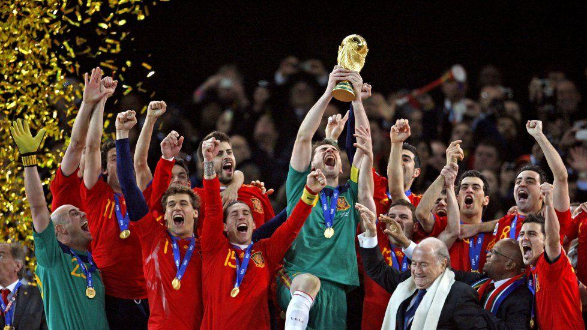

2022年11月21日，第22届世界杯足球赛在卡塔尔盛大开幕！
球迷们的狂欢盛宴终于来了！

明选福利：凡是11月22日-11月27日内下单用户可获得官方正品卡塔尔世界杯吉祥物！

斥资2000亿美元
“卡塔尔2022”史上最贵世界杯！

卡塔尔为了筹办本次世界杯，耗费巨资建造了8座各具特色的足球场，包括6座新建球场和2座翻新改造足球场。加上升级道路、城市、公共交通、酒店等基础设施，共计花费2200亿美元。
卡塔尔 | LOGO
19年9月3日20点22分(北京时间9月4日)，2022年卡塔尔世界杯的官方标识正式发布。
这是一个类似无限符号和数字8的阿拉伯传统围巾。
会徽的设计灵感源自阿拉伯人在冬季常穿的羊毛披肩，这一季节性服饰也暗示了本届世界杯将在冬季举行。
在动态展示中，白色披肩扭转形成了一个类似于阿拉伯数字“8”的立体弯曲圆环，波浪起伏的形态象征着卡塔尔独特的沙漠景观。
数字“8”不仅与本届世界杯的8个比赛场地相呼应，另一方面，这一设计也汲取了无限符号“∞”莫比乌斯环的概念，旨在为足球运动带来无限可能。
卡塔尔 |吉祥物
卡塔尔 |空调场馆
卡塔尔 |纪念币
2022年卡塔尔世界杯是第22届世界杯足球赛，逢大事件必有载入史册的藏品问世——国际足联FIFA唯一授权、卡塔尔央行发行、柏林铸币厂铸造《卡塔尔2022年世界杯纪念币》中国区公开发行。
这套藏品配额稀缺，官方发行，顶级造币厂铸造，高配置，极具珍藏价值！
卡塔尔2022年世界杯纪念币
国际足联FIFA授权、卡塔尔央行发行、
柏林铸币厂铸造
【藏品名称】2022卡塔尔FIFA世界杯·官方纪念普币套装
【授权单位】国际足联FIFA
【藏品属性】带有面值的“2022世界杯”法定官方纪念币
【藏品材质】铜镍合金
【藏品面值】1卡塔尔里亚尔
【藏品尺寸】30mm/枚
【藏品重量】9.59克/枚
【藏品数量】总计8枚代表8个主题
【发行单位】卡塔尔央行发行
（官方纪念币第一组）
（官方纪念币第二组）
明选福利：凡是11月22日-11月27日内下单用户可获得官方正品卡塔尔世界杯吉祥物！
全球配额稀缺，中国区限量发行
国际足联FIFA授权·卡塔尔中央发行
《2022年卡塔尔FIFA世界杯主办国官方纪念币普币套装》，由国际足联FIFA统一备案，统一授权来到中国，是卡塔尔央行官方发行，带有主办国的法定面值，在全世界范围内限量发行，本身的发行量就非常少。
所以各个国家得到的配额就更少， 也正是有机会经由国际足联FIFA和卡塔尔中央银行为中国授权，中国区才有了稀少的发行量，即便很少，但是让中国球迷，拥有了把世界杯的这份最高荣耀握在自己手中的机会。
这套2022年世界杯纪念币拥有严密完善的官方授权监控体系，FIFA为每一套产品配备镭射防伪标签、专属编码及产品证书。证书由国际足联秘书长、卡塔尔国家央行行长 、柏林造币厂常务董事联袂签名，确保权威品质。
2008年奥运会在北京举办，这场盛大的赛事，不仅让北京享誉世界，更是让国人产生了强烈的“盛会收藏情结”。
北京奥运会普通纪念币，发行总量为8000万枚，纪念钞发行600万，刚面世即被抢购一空，后来的价值更是水涨船高。
此次世界杯首次在中东国家卡塔尔举办，国际足联的规划使其本届世界杯纪念币的发行量一再缩减。
2022年世界杯纪念币藏品，大中华区仅有稀少的发行量，对广大中国球迷来说，可谓“屈指可数”、“无缘一见”。
此次世界杯纪念币发行管控严格，取消了银行兑换，有效控制了走私币，广大藏友只能通过官方渠道购买。
明选福利：凡是11月22日-11月27日内下单用户可获得官方正品卡塔尔世界杯吉祥物！
世界顶尖铸币工艺铸造
殿堂级珍品
《2022年卡塔尔FIFA世界杯主办国官方纪念币普币套装》承载世界杯的激情与梦想，更承载发行国的文化与历史，是由举办国倾力打造！
《2022年卡塔尔FIFA世界杯主办国官方纪念币普币套装》经由世界顶尖的造币厂——德国柏林造币厂铸造。
柏林造币厂拥有着无与伦比的铸币工艺，代表着铸币领域的最高权威和最高技艺！
这种铸币的“高规格”和国家的“高度重视”，奠定了《2022年卡塔尔FIFA世界杯主办国官方纪念币普币套装》必将成为具有欣赏价值、艺术价值、收藏价值与投资价值的纪念币类型，值得期待。
世界杯 体育大IP
4年才有一次的收藏大主题
1982年第十二届世界杯决赛在西班牙举行。为此，1982年中国人民银行决定发行第十二届世界杯足球赛金银铜纪念币一套4枚，其中铜币1枚，面值1元。截至目前，1元铜币的市场价值已达到2000元/枚。
意义非凡的世界杯
每一个球迷的独家记忆
2022年卡塔尔FIFA世界杯首次在中东地区举办、首次由伊斯兰国家主办、首次在冬季举办、首次由从未晋级过世界杯决赛圈的国家举办，并且是世界杯历史上面积最小的举办国。
卡塔尔世界杯，也是众多传奇球星代表世界杯国家队的最终之战。
2022年卡塔尔世界杯，也可能是传奇球星们（梅西、C罗、内马尔、莫德里奇、莱万勒、苏亚雷斯、本泽马等）在世界杯的收官之战，错过就不会再有的世界杯记忆。
在家收藏世界杯
2022年中国广大收藏爱好者的最强福音
2022年卡塔尔世界杯，将是2022年全世界最盛大的足球盛事，据相关数据统计，在世界杯期间，全球就有大约3.2亿人通过各种途径观看，而在中国，世界杯铁杆球迷岂止千万，如此庞大的球迷群体都将是这一藏品的需求者。
不少球迷和收藏爱好者都对“世界杯纪念品” 情有独钟，尤其是具有最高权威最高规格的“世界杯纪念币”，更是每个球迷都想拥有的独家纪念珍品。
但是，收藏世界杯纪念币并不那么容易，不仅要坐飞机去发行国购买，还要提前了解它的发行日期和情况，无形中浪费了许多财力、物力、精力。
2022年第22届卡塔尔世界杯纪念币，仅有稀少发行量，全套8枚，分为不同时期发行，收集起来的难度更加大，几乎不可能凭一己之力实现。
稀少的配额和收藏难度的加大，也正是这样，这套藏品的珍贵就显而易见！
现在购买即送卡塔尔世界杯吉祥物！
明选福利：凡是11月22日-11月27日内下单用户可获得官方正品卡塔尔世界杯吉祥物！
任何订单问题
长按识别二维码
在线咨询客服▼